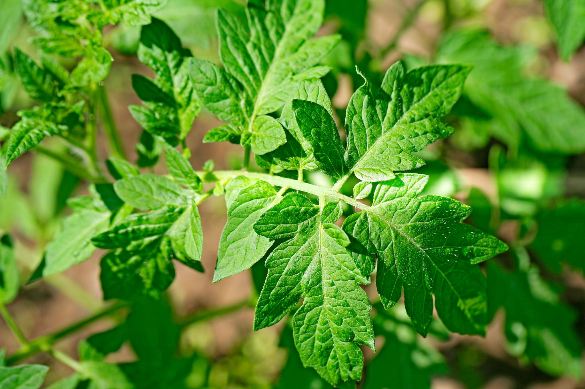
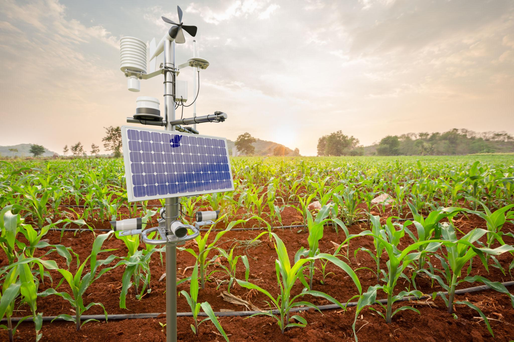
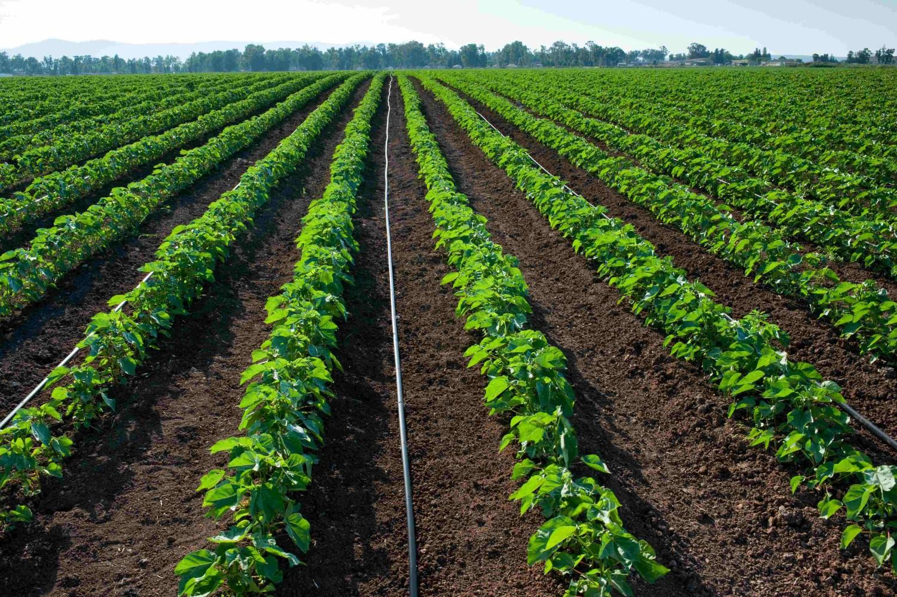
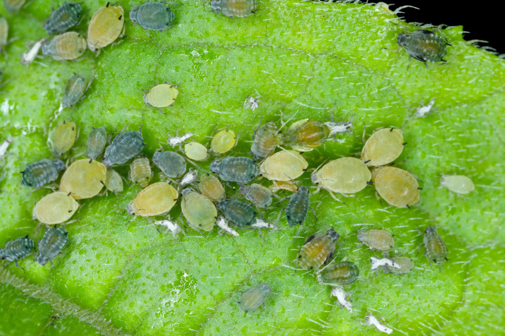
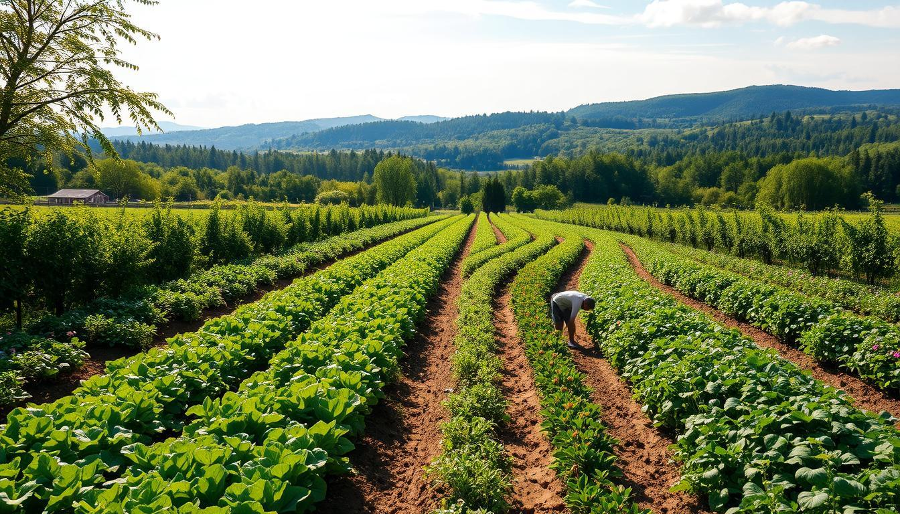

Smarter farming with data. Get crop recommendations, soil health advice and plant disease help in seconds.
Get Started Detect Disease
Matches soil, pH, rainfall and temperature to the best crops.
Analyses pH and NPK levels and suggests fertilizers and fixes.
Identifies likely plant diseases and gives treatment steps.
Discover how modern technology helps farmers make better decisions.

Understand rainfall and temperature to plan farming activities.

Learn how water management supports healthy crop growth.

Explore common crop pests and preventive practices.

Discover crop rotation and soil conservation methods.